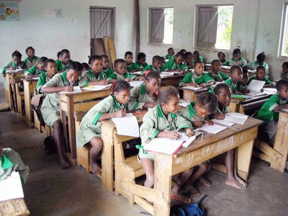
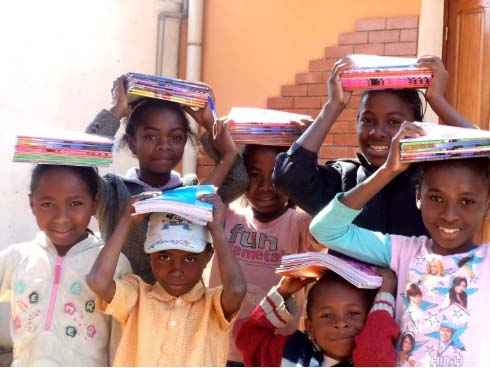
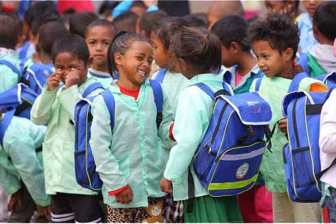

“La quatrième République de Madagascar, dans l’axe 4 « Capital Humain » de son Plan National de Développement (PND), entend faire jouer au système éducatif un rôle clé. A la sortie d’une longue crise politique,une nouvelle trajectoire de développement, à caractère inclusif et durable est nécessaire. C’est dans cette optique que le présent Plan Sectoriel de l’Education (PSE) pour la période 2018-2022 (PSE 2018-2022) a été élaboré. Il est l’aboutissement d’un processus participatif de réflexion sur la vision et les défis à relever ainsi que sur les stratégies prioritaires correspondantes. Il s’agit du premier plan développé par l’ensemble du secteur éducatif composé actuellement de trois ministères : le Ministère de l’Education Nationale (MEN) ; le Ministère de l’Emploi, de Enseignement Technique et de la Formation Professionnelle (MEETFP) ; le Ministère de l’Enseignement Supérieur et de la Recherche Scientifique (MESupReS). Les trois ministères en charge de l’éducation s’engagent à assurer une mise en œuvre efficiente des orientations contenues dans ce plan sectoriel de l’éducation” La mesure phare est la création d’une éducation fondamentale de 9 ans selon la formulation du PSE 2018-2022.
Création de bâtiments scolaires.
Organisation d’une journée d’école.
Cependant, à lui tout seul l’Etat ne pourrait assurer le financement de la mise en œuvre d’une telle réforme. D’où un appel à des partenariats tels que le don du Partenariat Mondial pour l’Education (PME) et des financements issus des autres Partenaires Techniques et Financiers (PTF) traditionnels. Le présent plan sectoriel de l’éducation, pour la période 2018-2022, constitue donc l’aboutissement d’un processus participatif, impliquant, à chacune de ses étapes, toutes les parties prenantes sous la coordination étroite du Comité Interministériel de Pilotage (CIP) et avec le soutien indéfectible des PTF et du Groupe Local des Partenaires de l’Education (GLPE). Au niveau institutionnel, outre les trois ministères en charge de l’éducation, la finalisation du cadrage budgétaire du PSE n’aurait pu être réalisée sans l’appui du ministère 12 en charge des finances et du budget. A ce titre, le présent PSE se présente comme un cadre: d’intégration des actions de développement de l’éducation et de la formation; de consultation et de concertation avec les PTF et le GLPE ; de coordination des actions des trois ministères en charge de l’éducation et des appuis extérieurs en cohérence avec la programmation budgétaire pluriannuelle (Cadre de Dépenses à Moyen Terme ou CDMT).”
Uniformisation de l’éducation.
